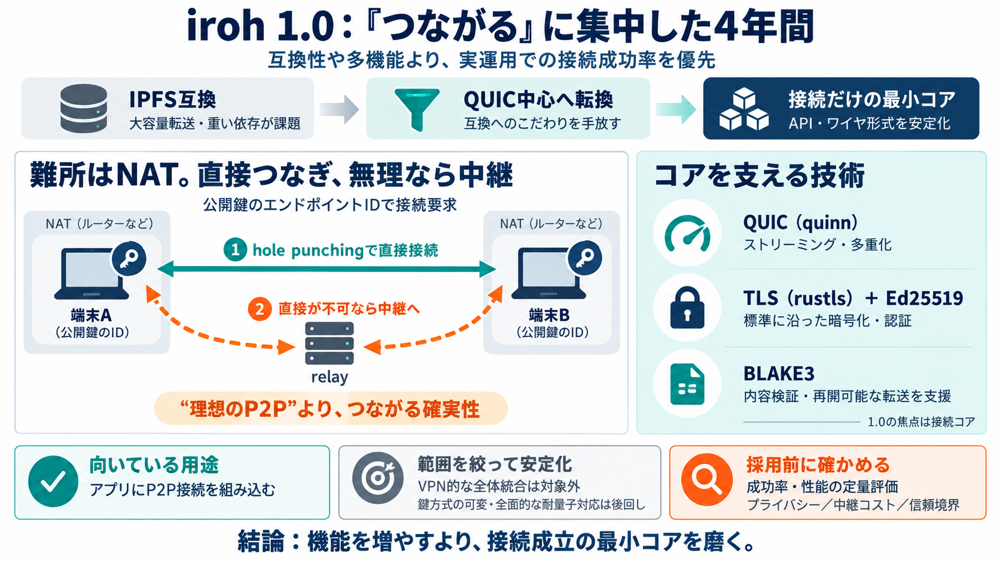

iroh 0.96.0 - The QUIC Multipaths to 1.0 - Iroh
This release includes QUIC multipath support and our adoption of QUIC-NAT-Traversal (QNT), an emerging IETF standard tha…

4年で収束：接続の確実性へ
irohは「つながること」に一点集中し、方針転換（pivot）を重ねて、安定したP2P接続コアへ到達した――その開発者視点の振り返りです。
P2Pの本質課題はNAT
P2Pは理屈よりも現実（NAT・ネットワーク環境・再開可能性・依存関係）で失敗しやすい。irohは最終的に「成功率の高い接続」を最上位要件に置きました。
互換より、試作で学ぶ
初期irohはIPFS互換のRust実装から始まりましたが、大容量ブロブ転送の不満や依存の重さが、現実用途でボトルネックになっていきます。
pivot：互換を捨て、最小コアへ
デルタチャットのような“狭いが厳しい用途”に合わせて、IPFS互換のこだわりをやめ、QUICベース／BLAKE3検証ストリーミング／公開鍵（Ed25519）でエンドポイント認証へ収束しました。
quinnが“詰まり”を解いた
当時ライブラリ統合が難しい状況でも、Rustで扱いやすいQUIC実装（quinn）を採用したことで、ネットワークデモを成立させつつ、その後の設計にも追随できる形になりました。
TLSは残す：標準に寄せる
QUICの役割分担（RFC 9000）からTLS（rustls）を維持しつつ、raw public keyのような具体的改善で不満点を解消していきました。最終的には業界標準との整合を優先しています。
“理想P2P”より成功率
hole punchingは成功率が環境で変わるため、基本は直接接続を狙い、必要なら中継（relay）へフォールバックします。結果として、tailscaleに近い「成功率優先」の思想が入っています。
検証を“ストリーミング”に
BLAKE3を使った内容アドレスと検証ストリーミングにより、大容量転送でも「途中から再開」や「検証の自然な統合」を狙います。krakensyncのような試作が、その方向性を固めました。
バッテリー同梱→“接続だけ”
APIが肥大化すると品質を全方位で担保しにくい。そこでirohは利用者が共通して必要とする部分――「エンドポイントIDによるダイヤル」と「確実なhole punching付き接続」へ絞り、1.0の安定化を実現しました。
“やらない”も決める
鍵アルゴリズムの可変やポスト量子署名への全面対応など、要求はあるが現時点で採らない選択も明示されています。拡張は可能でも、基盤の安定性を優先する方針です。
納得感は強いが、数値は薄い
経緯は理解しやすい一方、失敗率・ベンチマーク・依存削減量・脅威モデル比較などの定量評価が不足していると感じるポイントがあります。採用判断には、最適化された要件（成功率・再開・用途）を前提に照合が必要です。
結論：接続“コア”に収束
互換や汎用性より、実運用での成功確率と実装可能性を優先し続けた結果、irohは「端末間接続」を安定して提供する最小コアに絞り込みました。次は自分の用途制約に合わせて、接続方針（direct＋fallback）をどう組み立てるかを検討してください。
This release includes QUIC multipath support and our adoption of QUIC-NAT-Traversal (QNT), an emerging IETF standard tha…
If direct hole-punching fails, the system automatically uses an open ecosystem of relay servers as a fallback. Iroh is b…
### Hole-punching The fastest route is a direct connection, so if necessary, iroh tries to hole-punch. Should this fail…
Jun 19 What a week! 1.0 launch on Monday, 10k stars by Thursday. Thank you so much everyone for all of your support …
Accel Partners Partech IN-Q-TEL - US Fujitsu Tenity Stanford [...] JavaScript is disabled in your browser. enable it to …
N0, Inc. shipped Iroh 1.0 on June 15, 2026 — the first stable release of its open-source Rust networking library that le…
The road to 1.0 was anything but straight, but certainly extremely exciting and interesting. And we are not at the end. …
## Wire Stability Iroh version 1.0 asserts stability for both the wire protocol and language APIs: an iroh v1 endpoint …
# Lib.rs ## iroh p2p quic connections dialed by public key Owned by Friedel Ziegelmayer, Kasey, n0-computer. ### 69 …